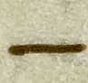
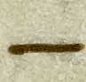
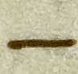
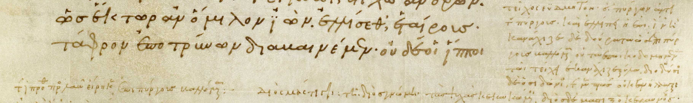

General format:

 
 


ὅτι or 
--- author: HMT Group B title: Final Pres
Blank Slide
--- = data-x='1000'
Where are we?
--- = data-x='2000'
General format:
 ὅτι or
--- = data-x='2000' data-rotate-x='90'
Something interesting here!!

Diple Line
{
--- = data-x='2000' data-rotate-x='180'
Something interesting here related to Zenodotus!!


--- = data-x='3000' data-rotate-x='180'
--- = data-x='3000' data-rotate-x='180' data-rotate-y='90'
Oti Interlinear Line
Oti Interlinear Odd
--- = data-x='3000' data-rotate-x='180' data-rotate-y='180'

2 Diplay Line
2 Diplay Oti 1
--- = data-x='3000' data-rotate-x='180' data-rotate-y='270'
2 Diplay Line
{
--- = data-x='4000'